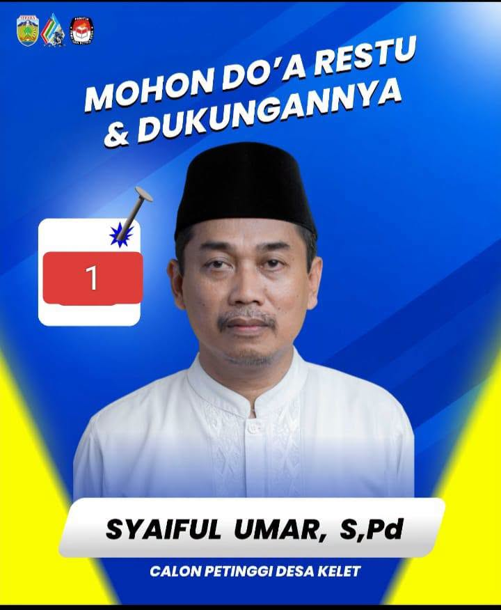
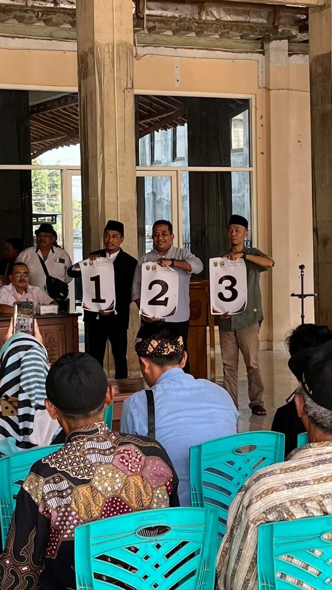
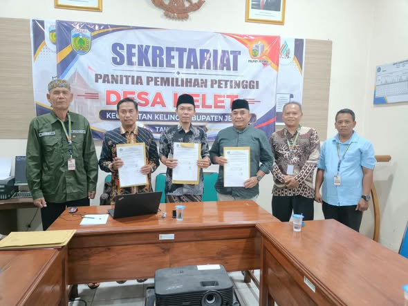

Website profil dan informasi publik kandidat. Berisi identitas, dokumentasi, pengalaman, serta ruang untuk menyampaikan visi dan program secara terbuka kepada masyarakat Desa Kelet.

Kandidat Petinggi Desa Kelet dengan nomor urut 1.
Desa Kelet, Kecamatan Keling, Kabupaten Jepara, Jawa Tengah.
Gelar pendidikan yang tercantum pada materi dan profil publik kandidat.
Tempatkan rumusan visi resmi calon di bagian ini. Disarankan menggunakan teks yang sama persis dengan dokumen pendaftaran/kampanye agar tidak terjadi perbedaan informasi.
Isi dengan program pelayanan desa, transparansi administrasi, dan target perbaikan layanan.
Isi dengan prioritas pembangunan, infrastruktur, lingkungan, serta indikator hasil yang terukur.
Isi dengan program ekonomi, UMKM, pemuda, perempuan, pertanian, sosial, dan kegiatan kemasyarakatan.
Catatan: tiga bidang di atas adalah struktur contoh website, bukan klaim program resmi kandidat.


Pendataan RW/RT, nama pemilih, validasi NIK, rekap per RW, pencarian, dan cetak PDF.
Data Pemilu 2024 pada halaman ini merujuk pada publikasi KPU Kabupaten Jepara. Data kepengurusan Golkar tingkat Kecamatan Keling merujuk pada portal publikasi KPU. Materi visual berasal dari file yang Anda unggah.